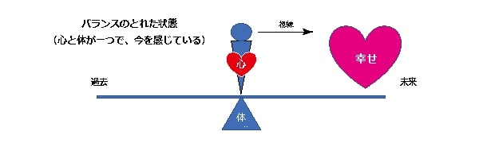
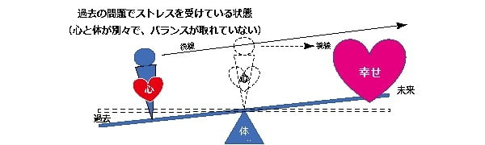
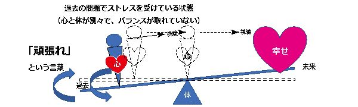
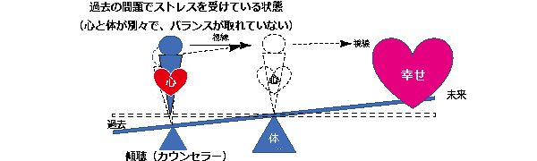

| あなたはいつまでも 悩みの本質を知らないから 悩みから解放されない | |
| 小池 秀一 | |
| (2019) | |
あなたはいつまでも
悩みの本質を知らないから
悩みから解放されない
小池 秀一
目次
Text copyright © 2019 Shuichi Koike
All Rights Reserved
はじめに
なぜ、この本を書こうかと思ったのかというと、
1つは心というのは見えると理解しやすいと思った事。
心が見えることができたら、悩んだ時どうすればよいかが理解しやすいはず。そして、見えないがゆえに方向が見えなくなっている人がすごく多いことに気づいたこと。
それがこの図。

次に、悩みというのは人の成長には欠かせないものだけど、大きすぎたり重すぎると、荷物と一緒で持ちきれなく、そこで立ち往生したり潰れたりしてしまう。
だったら、その荷物を持てる分、持たないといけない分に分け、持てる分、持つべき分だけを持つことで身軽になることで次に進める。
例えば、引っ越ししようと思った時、物がありすぎて何から手をつけて良いか判らないことってあると思う。だけど、そんな時、まずは1つ目の段ボールから始める。
そこには多分日常ではあまり使わないけれど大切なものを収めていく。
そこから始まり、必要なものと不要なものの区別が始まり、最後にはいつも使うもの、そして貴重なものを段ボールに収めるか、自分で持って新しいところに移る。
これは私たちが何かを夢見たり、悩んだりした時も同じ行動をとると、物事が整理されていくのだけれど、夢に関しては皆、結構具体的な予定を計画表として作るが、悩みには何故か？とたんに何から手をつけて良いのかわからず、想いばかりが先走り、結局手つかずのまま時間が過ぎ、焦りだけが残ってしまう。
現実では引っ越しのように目に見える事はまずは手を付けられるところから始めているが、そんな簡単なことが、見えない心ではなかなかできない。
目に見えない心の内を見えるよう（可視化する）にすることは難しいと人は思うが、その基本さえ理解すればどんな大きな荷物（悩みや夢）でも持てる。持ち続けて成長できると言う事を皆さんに理解してほしいと思ったのが、この本を書く動機、原動力です。
相手に対する思いをいくら持っていても、それを伝えないと相手はわからない。
そんな時、私たちは自分で伝えるのではなく他に求める。例えば、相手が気付いてくれるだろうとか、恋のキューピットを探したりとかしている。
だけどそれでは、その人の持っている想いは運に左右されて、相手に伝わる機会が減り、成り行きに任せる形で結末が出てしまう。だから後悔も残る。
何が欠けているかというと、その人の想いを告げたいという「原動力」が欠けている。だから迷子になってしまう。
そんな時、どうすれば、その「原動力」が自分にもてるのか。
悩みがあるとき、心の中が整理され、その問題を持てる（解決していける）と心が理解した時、人は「原動力」を手に入れ、前に進んでいけるのです。
それをこの本をきっかけとして、順に書いていきたいと思います。
まずは悩みを大きく分けるにはどうしたらよいだろうか。
ネットで検索してみるのも一つの方法だが、これはこの章の後半に譲るとして、まずはそれぞれ見るポジションの違いから悩みを考えてみたいと思う。
ポジションの違いとは、この場合、自分自身、相手、そして客観的な第三者で、NLPではメタポジションと呼ばれているものである。
巷でよく言われている「相手の立場に立って考える。」と言う事が第2ポジションになるのだが、これは本来、人間である前に生き物である動物としての考えにはないと思う。
いわゆる、人だから出来る事だが、その人だから悩みが生まれる。
そのあたりを詳しく語っているのがアドラーなのだが、この本は心理学を基に書いてはいるが、いわゆる専門図書そしてではなく、実用書として進めていきたい。
また、心理学の知識は今はインターネットで簡単に求められるので、わざわざ書く必要はないかと思うが、このインターネットの進化には目を見張るものがある
西暦2000年は家族でオーストラリアにおり、様々な日本の出来事をネット検索していたが、あまり実感もなく、また、私が日本に帰った際はネットでの会話は回線スピードが遅く、とても普通に使える代物ではなかった。
だが今は、LINEをはじめ、様々なSNSによっていとも簡単にコミュニケーションをとれる環境が整っているが、これがまた反対に新たな悩みを作り出しているのだと思う。
「人間はそれほど器用ではない。」というのがそもそもの原因ではないだろうか。
「人は一人では生きられない。」これも事実ではあるが、人は一人になる時間がすごく大切だと思うにもかかわらず、ネット環境がそれをさせてくれなくなっている。
常速やかな返事を求める。
今、私は60歳を過ぎているが、携帯電話が出始めたころは便利ではあったが、地価ではつながらず、良く仕事の電話に出たくないときは「電波の届かない地下にいました。」と言い訳をしたのを覚えている。
今は地下鉄ですら走行中でも電話ができる（マナー違反ではあるが）。
簡単に言えば、逃げ場所がなくなっているのである。
「現代社会はストレス社会」と呼ばれるが、昔から都会に人は多かったし、すれ違う人が多くとも、あいさつするわけでもなく、通りすがりの人は道端の草や花とあまり違いはないはずなのに（基本、自分の人生に影響はない）、人として比べるから、相手のファッションや顔など様々な点が気になり、気を抜く部分がなくなって人混みがつかれる場所になっている。
今はそれに輪をかけて、見えない相手、ネットでつながっている相手、も通りすがりの人以上の重みで私たちとかかわり、ますます個人の時間がなくなってくる。
これは何が問題かというと、脳の問題ではないかと思う。
私たちの体の脳はその日にあった出来事を夢という形で整理し、睡眠という形で記憶にとどめておくべきこととそうでないことを区別し、リセットする機能を持っている。
ところが、現実は、私たちの心を休息させることをあまり気にしていないように思える。
体のことは多くの人は気にするのに、心は勝手に寝れば回復すると思っている。
睡眠も確かに心を休める上ではすごく大切なのはもちろんであるが、ここで一つ考えてほしい。
若いときは多少寝なくても無理がきいたが、歳を取るとともに寝ても疲れが取れないことはないだろうか。そんな時、私たちは体の疲れを取るのにある人は栄養ドリンクを飲み、ある人はサウナやマッサージなどに行くかもしれないが、そのときに、心を休めることは十分に考えているだろうか。
確かに、身体を休める動作の多くは心を休めるのにも効果がある。通常はそうなのかもしれないが、心が体よりも疲れる場面というのは数多くある。そのようなときでも心優先の休め方をあまりしていないと思いませんか。
また、それと同じで、体を鍛える事には多くの方法や場所があり、時間を使うが、心の鍛え方というのは本を読んで努力することくらいで、あまり気にしていないのではないだろうか。
今、私が教えているセミナーの一つに『マインドフルネス』があるが、これは心のメンテナンスにはすごく効果があると思います。
なぜ、効果がるのか。
簡単に言うと、深呼吸、いわゆる腹式呼吸をすることで今を感じ、心が今に戻れるからだと思う。
まずは悩んでいるとき、いわゆる心の迷走が始まっているときの心の状態を簡単に図であらわしたものを見て頂こうと思います。
この図は、心のバランスが取れ、リラックスした状態で、例えば、マインドフルネスで、この状態になっているとすごく今を感じ、リラックスできます。
体というものは常に今に生き、1時間後おなかが減るとしても今、減っていなかったら空腹感は感じない。だが、心は常に揺れ動いて、１時間先の空腹を心配している。
そして、多分、幸せなことを考えているときは、心はシーソーから浮き上がっていて、重さがシーソーに伝わらず、いくら過去や未来に心が動いたとしても、心がうきうきしている状態って、きっとこんな感じなのかなと思う。
そうなのです。心にも重さがあるのです。
みなさんも私が言う前によくご存じだと思います。そして、その心の重さを実感することが大切なのだけれど、普段の私たちは体重には気を使うけれど、心の重さには気持ちで乗り越える、根性論、がはびこっているように思います。
確かに、根性論も大切なときがあるのは知っています。というか、私の若いときは根性論が主体でスポーツクラブでは「練習中に水を飲むのは禁止！！」という時代を過ごしてきたので、それの良い所、悪い所はそれなりに理解していますが、今、現代においてはやはり根性論では乗り切れない時代なのだと思います。
IT時代。それは確かに便利にはなっていますが、心を考えた時には、より不便な時代になるように思います。
それは何故か。
それは、孤独の時間が少なくなるからです。テレビも多様化し、SNSは24時間私たちの生活にいつでも入ってくる。これって、便利なようで、結局一人の時間がなくなり、それは体に例えると、「夢を見る時間」が無くなると言う事だと思います。
脳は夢を見ることで情報整理をし、必要な情報を定着させるように、心の内にあるものを発散させているのだとすれば、1人で静かに考えるという時間がすごく大切だと思いませんか？
1人の時間。それが孤独ではなく孤高につながっていくと、その人は成長していくのだと思う。では、孤独と孤高、何が違うか。それはいたって簡単である。
孤独は周りには誰もいなくて、１人の状態で、孤高は周りから抜け出て高い所に上り詰めている状態だと思う。
１人になった時、その人に何か目的があれば、また、意図があれば、その一人の状態というのは目的、または意図に従って時間が使われる。一人になって、寂しいと思い心が暗くなるのか、その一人の時間に思いを馳せ、自由気ままに心を遊ばすのか、おのずとそのあとの行動、気持ちが違うのは自然ではないだろうか。
そして、マインドフルネスはその１人の時間を、今を感じることでシーソーのバランスをとるのにすごく役立つ。
ただ、マインドフルネスの時は、未来の幸せを見ようとはしませんが、瞑想自体40年近く、毎日ではなく雰囲気ですが、継続してきた私の体験では雑念にも役立つ雑念と、不要な雑念があると思います。
心がリラックスできる雑念。それはすごく役立つのではないかと思います。

悩んでいるとき、例えば、過去に上司に怒られたことがありありと思いだされ、そのことが頭から離れず、リアルに思い出されるから、よけいに疲れがたまる。
その時の状態というのが上の図である。
過去に心が行ってしまい、それが気持ちを重たくさせる時、シーソーであれば上の図のように傾向いた状態となっている。
当然のことながら、視線の方向が違う方向に向いている。
そうなのです。そのような状態の時に明るい未来が見えなくなるのはいたって自然なことなのです。しかし、全く見えないわけでもない。ぼんやりと視界には入っているが、具体的にはぼんやりとしか見えていないので、シーソーは傾いたままでは明日の楽しみ、希望というのは虚ろにしか映らなくなるのです。
だけど、その明日の楽しみ、希望がうつろにではなく、現実感を帯びてくると、未来の明るいイメージが具体的になると重みを生じ、シーソーの上に乗ってくるので、心が過去に合っても、シーソーはバランスを保ちだすので、シーソーの傾きがなくなる。そして、心が今に帰ってきたとき、すごく楽な状態に戻る。
これが、「思い悩んでいたけど、何か吹っ切れた。」瞬間だと思います。
この時に、大きな問題は、土台である体の体力の違いが土台の大きさの違いとなって表れ、体力がない状態だと、小さい土台となるので、地面との距離も少なく、ちょっとの傾きでシーソーが地面にくっついてしまう。
一度くっついてしまうと、現実のシーソーと同じで地面から離すのに結構力がいる。
これは皆さんが小さい時、シーソーで遊んで多分体験されていることだと思います。
シーソーの片方が地面にくっついた状態が私の中では鬱に陥った瞬間として、カウンセリングをしているときはイメージしている。

人に相談すると、相手が聞き役に徹してくれるのであればよいが、一般的には聞いた後に必ず、その人自身の意見を言ってくる。
だけど、相談する人にとっては、その意見というのはおおよそ考えており、自分の選択肢から外れているから、自分にとってはハードルが高いから実際に行っていないことが多い。
にもかかわらず、「頑張れ」といった内容になるから、話していても最後は疲れる。それは、傾いたシーソーを「頑張れ」という言葉で持ち上げているようなものだと思う。しかも、その悩み、心がとどまっているところを支えるのではなく、違うところで持ち上げようとするから、心の軸（ここでいうとシーソーの横棒）に無理な力がかかり、心が折れそうに思う。
そして、相談が終わり、一人になった時、その支えがなくなるので一気に傾いてしまうそして、地面にゴツンとぶつかる・・・
そうすると立ち直るのが（シーソーを持ち上げるのが）難しくなる。これはイメージしていただきたいのですが、シーソーは両方が地面と離れているときにはちょっとした力をかけるだけで簡単に動きますが、片方が地面についていると、それを持ち上げるにはちょっと勢いをつけて強い力がいるのと同じです。
では、こうして、心のバランスが傾き、音楽を聴いてもマインドフルネスをしても、今の自分に戻れないときはどうすればよいのでしょうか？
それが次にご紹介いたしますカウンセラーの役割を見ていただくと最初は何となくでしょうが、理解していただけると思います。

この図を見てもらったら分かるように、私たちの心は瞬時に未来や過去へと移動する。
そして通常はまた現在（体のある所）に戻ってきて、シーソーはバランスが取れ、明日を見る余裕もできてくるのだが、心の病になると、過去に心がとどまってしまい、シーソーが傾いたままになる。
実際には心はバランスが崩れているにもかかわらず、私たちは日常生活であたかも何もなかったようなふりをして、バランスが取れ、過去のことに捕らわれていないようなふりをする。
それを支える力となるのがカウンセラーです。
過去の出来事の話を聞き、ともにその時の感情（心）である悔しさや辛さを分かち合い、一人で悩んでいるのではなく、一人で支えているのではないと感じた時、その過去の出来事を支える事となり、心のバランスが取れ、現在ある問題、また未来にある可能性や幸せといったものに目を向けれるようになる。
それがカウンセラーの基本的な役割だと思います。
そのバランスが取れるようになったかどうかはどうしてカウンセラーは判断するのか？
私の場合は相手の目です。
話を聞く前の目と、聴いた後の目の輝きが全然違うのです。ですので、その輝きが変わるまでが1セッションで、それが10分程度の場合もあれば1時間以上かかる場合もあります。
西洋ではカウンセラーと話をするのは皆さんあまり抵抗がないですが、日本ではもう、カウンセラーと会うだけであたかも「心の病人」という烙印を押されたかのように感じられている気がして仕方ないです。
それはたぶん宗教的というか伝統の違いなのではないでしょうか。
西洋、特にキリスト教は「懺悔」という習慣があり、自己開示することに抵抗感がなく、話をする習慣ができています。
一方、日本というか仏教はどちらかというと「説法」がメインで、自己開示をする機会がないと思います。こういった文化の違い、宗教の違いが日本でカウンセリングビジネスが成り立たないのではないかと思っていますが、たとえ、文化や宗教が異なれど、人間である以上、心のバランスが大きく私たちの日常に影響しているのは確かです。
この、心と体の関係をシーソーという目に見える形で理解し、体だけでなく、心の栄養剤やリフレッシュ、ストレッチを心がけていただけると幸いです。
今まで私自身様々、様々な自己啓発の本を読んできましたが、良いことがたくさん書いてあっても、脳がついてこない。
結局、直すべき点、注意すべき点が多すぎて長続きしない。という経験があるのですが、皆さんありませんか？
そこで考えたいのが脳とは何かという事です。
脳について調べだすと限りない。その理由は簡単です。脳について最終の答えは誰も知らないからです。
悩みというのは先が見えないから悩みであって、先が見えると悩みではなくなる。
脳についても同じなのです。自分の脳の能力を伸ばしたくても最終の答えが見えないのだから、それに関して多くの時間を費やしてもなかなか答えが出ない。
だったら、どうすればよいのか？
わかっていることを明確にし、シンプルな方法を見つけ出すこと。
そして新しい発見があれば、その都度、改良していく。と言う事は、最初から決めてしまわないと言う事です。決めると言う事は結論があるから決めるので、結論の無い所で決めると迷いが生じる。
これが私たちが多くの自己啓発などの良い本を読んだとしても日常に取り込めない一番の理由ではないでしょうか。
良い本を次から次へと目指すものが変わっていくから、一つの成果が出ない。
そして、良いことが自分にとって正しいこととは限らない。だから、間違った（自分には不向きな努力）をひたすら続けようとする。
そして、続かない。
ですので、この本は一つの事から明確にしていくことで、その先の新しいことに向け効率的に行うと言う事です。
では、脳の特性をまずは知りたいと思います。
騙し絵に引っかかる。それは聴覚や触覚ではなかなか起こりえないということも言えるのだと思います。
そして、私たちは、全体像が見えていると、その後の学習が効果的に進むと言う事。
登山で山頂が見えていると気持ちが折れにくいけど、森の中だと不安も生まれ、疲労感を感じる。ただ、山頂が遠すぎると、やる気もなくしますがね。
「私たちの脳は夢を見ることで情報整理をしている。」と言う事が良く知られていますが、心（感情）にもそれが必要だと言う事です。
感情は抑えると必ず爆発するけれど、感情を発散するとリラックスでき、新しいことが頭に入ってくると言う事です。
記憶するという時、集中がすごく大切ですが、集中で一番問題なのが雑念。
雑念を払うのには集中するための訓練、いわゆる瞑想も有効だが、個人的には、もし、集中するだけなら、瞑想より、興味の対象に目を向ける方が効率的だと思う。
私たちの興味とはイメージが強ければ強いほど、それに富まない集中力も強く、いわゆる、夢を無くすというのは、その興味がなくなる時ではないだろうか。
だから、興味を持ち続けている間というのは夢があり、夢があると言う事はそれに向かっている間は一生懸命になれる。すると集中している。
と言う事は、興味、いわゆる好奇心が
その時の心はいまには確実にはなく、良い思い出はシーソーの上で浮かんでいる（そうでしょ？楽しいときはウキウキすることがあるでしょう）。
まずは、イメージしてください。自分の心の状態を。
「そして次に、理想的な心の状態」をイメージし、それには何がいるのかを考えてください。そこが今を感じ、悩みの渦から抜け出す第一歩です。
自分なりの人物像
常に目線は相手と同じを心掛け、ものを考え、基本、人間やめて、爬虫類脳の動物脳で生活するようにしている。直観で動き、崖っぷちが好き。
サバンナで年老いて静かに一点を見つめ風を楽しむ雌ライオン（オスは縄張り意識が強すぎてだめ）。というのが私自身の「心の原風景」です。
仕事
普通科高校から獣医を目指し4浪。これが、まず、私の人生の大きなつまずききで、心機一転建築学科に入ったものの、そこで人生の落伍者というレッテルを張られているのは痛いほどわかった。
そして、学生結婚。卒業前に長男の出産。設計事務所で仕事をしているとき、ある日、日航ジャンボ機墜落事故で従兄弟家族4人をなくす。おじさんと前橋まで行き、遺体との対面。
従兄には誤解されていることがあり、もっと語りたいこと、理解してほしいことがあったが、その機会もなく、一家4人でなくなるということがせめてもの幸せかなとは思ったが、おじさん、おばさんの悲しみには何もできない自分がいること。それが人なのだと自分なりに理解する。
建築から広告会社を経て、独立。その後不動産業も行うが、西宮で不動産業を営んでいたので阪神大震災に遭遇。家族は怪我はしなかったが、阪神高速からバスが半分落ちかけていたところから約700ｍが家。管理物件もあるので見て回っているとき、その光景を目の当たりにしてとても不思議な感覚に襲われた。
不動産業なのでもちろん賃貸を仲介していたので、多くの知り合いというか、入居された方がなくなる。そして、人の目から光がなくなるのを目の当たりにもし、また、遺族の方から、古い木造住宅の１階の端の部屋を仲介し、建物自体がそちらのほうに向かって１階部分がつぶれた。もちろんその人は亡くなった。建築士の資格があるにもかかわらず、そんな家を紹介し、人殺しと同じだと非難もされる。
地震後の2年間は建築の仕事も忙しく日々を過ごすが、ひと段落したとき、中学1年生の息子の学校でのいじめのひどさを仕事にかまけて気づいていないかった自分がおり、それに直面し、息子を見ていると日本での生活、幼すぎて無理だと実感した。
彼はずっといじめられるのだと思い、様々なことを考えたが、結局、日本での生活を捨て、家族でオーストラリアのパースに10年間住むこととなる。
英語もできず移り住んだ私は珍道中の連続で、特にひどかったのがスーパーでの買い物にも不慣れで、ドッグフードのソーセージを人用と勘違いし、購入、家族で食べた。
とんでもない出来事であったが、その後、何年かして、そのドッグフードのソーセージを製造している会社の社長と知り合いになり、それを日本に紹介するきっかけとなるような笑い話もあった。
ワインや肉などの日本への輸出なども試みるが、文化の違い、価値観の違い、時間の使い方の違いを思い知らされ、苦労の連続であった。
結局、生活費は日本に出稼ぎに戻り、私は日本とオーストラリアを半分半分。家族3人、嫁と子供もたちは毎日をパースで過ごすこととなる。
そして、最後に試みたオーストラリアでのビジネスは鉱石の採掘ビジネス。
将来を掛けるが見事失敗。
失敗したものの、パースから1300ｋｍ離れた採掘現場に協力者のアボリジニと行き、トルマリン、サファイア、ルビーなどのサンプルをとるとともに挙句の果てにはウランの原石もガイガーカウンターを持参し、採掘する。
たぶん、日本人でオーストラリアで被爆したのは私ぐらいではないかと思っている。
そのビジネスも、結局、オーストラリアという国が広大で、ペットボトルの水を買うにも片道400㎞という距離に阻まれ、とん挫する。
いざ、日本に帰るとなると、ペットとして買っていた犬、マリオを手放せず、約25万円をかけて日本に連れて帰る。
私たちの飛行機代が約10万円なのに、ファーストクラスで彼は帰ってきて（いや、来日した）
日本に帰り、建築会社に務めるが私自身、適応障害となる。
お金の数え方も不慣れで、電話対応で、田中さんと中田さんの違いが聞き分けられない。打合せ議事録では漢字が書けないなど、信じられないくらい日常生活で支障が出た。
そのような折、ひょんなことから、カウンセラー養成の学校に通うことができ、様々な人をカウンセリングするとともに、学校に残りカウンセリングの実技指導、そして生徒たちの心のケアの仕事をする。
娘は結局、日本に馴染めず20で結婚してパースに戻り今子供、いわゆる孫が1人。
息子結局オーストラリアには住めず日本で生活をしている。
その学校も退職し、カウンセラーとして行ってきたが、様々な家族と触れ合ううち、仕事の中で認知症に興味を持ち、より、認知症というものがどういったものかを知りたく、新規っ店、介護の学校に行って実務で体感。
認知症に関しては本人は機能的障害があり、カウンセリングはむつかしいが、その周囲の人、家族に対してのカウンセリング、いわゆる自分のことを忘れていく親遅滞する悲しさをどうケアするかに取り組む。
それと共に、「友人が心理の学校を立ち上げるので、その協力に力を注ぎ、今はそこでの講師もしている。
そう、変化に富んだ人生を歩いてきた。建築設計、不動産業、海外貿易、採掘ビジネス、建設業、心理カウンセラー、介護、一般社団法人での講師。そして、去年は自転車の自損事故で2か月近くの入院、そして現在リハビリ中。
やっと先日、プレートが取れて、この先、どんな経験をするのか・・・とりあえずは、次の世代を育てるお手伝い。かな？と思っている今日この頃です。
これを始めとして、今後、人の心について書いていきたいと思います。